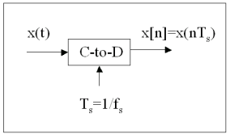
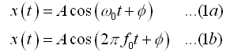
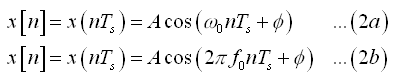
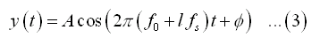
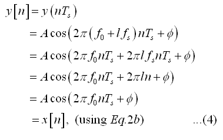
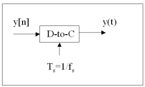
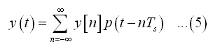
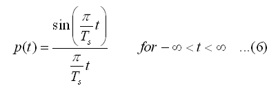
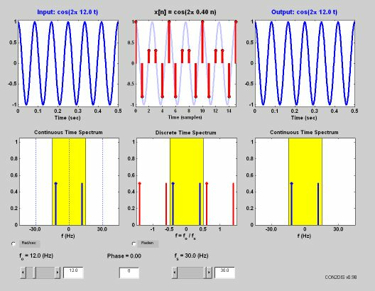
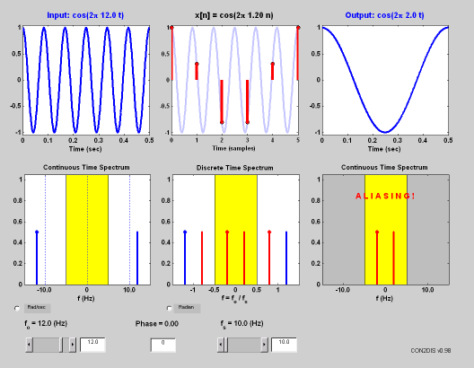

Continuous-Discrete time conversion: (Sampling)
Most of the real world signals that we encounter are continuous time signals. It is difficult and costly to process signals in continuous time. If the continuous time signals can be converted to discrete time signals (sample values at discrete points) by some reliable method, then computers can be used to do the processing in discrete time. In most cases, processing discrete time signals is flexible and preferable, compared to that of continuous time signals.
The conversion process should be such that, the information in continuous time is carried over reliably to the discrete domain and the original signal can also be reconstructed from its discrete domain value. Sampling is the process that can be used to convert the continuous time signal to discrete time signal. If a few conditions are met, then representing and recovering a continuous time signal from its samples will be reliable and the Sampling Theorem specifies these conditions.
In relevance to the Con2Dis tool, we base our discussions on Sinusoidal signals. Since, most of real-world signals can be represented using Sinusoidal signals, concepts discussed here can be applied and extended to all kinds of signals. In this section, we discuss the sampling theorem, requirements specified by it and the consequences if the theorem is not satisfied.

An ideal system that converts Continuous-time signal to discrete-time signal is as shown in the figure. Consider a continuous time sinusoidal signal of the form,

where, w0 is the radian frequency (rad) of the signal and f0 is the cyclic frequency (Hz) of the signal.The corresponding discrete time signal x[n] can be obtained by sampling x(t), using the ideal system shown above. Hence, x[n] is of the form,

Thus the sampling operation can be seen as a transformation from Continuous-time to discrete-time. The system used here is only a mathematical idealization. In real-world, this needs to be implemented using an A/D converter that has quantization and jitter problems. We are not concerned about these issues in our discussion here.
The obtained samples, by themselves cannot be used to reliably reconstruct the original signal. This is because, more than one continuous-time signal can have the same discrete-time samples, depending on their own frequency and sampling frequency. So, in order to reconstruct the signal, we need to know the sampling rate of the signal. Another information that is of importance is how often do we need to sample the signal, to reliably reconstruct it. A condition for this is given by Shannon's Sampling Theorem, which states that,
A continuous-time signalx(t)with frequencies no higher than fmax can be reconstructed exactly from its samplesx[n]=x(nTs), if the samples are taken at a ratefs=1/Tsthat is greater than2fmax.
fs is called the sampling rate and 2fmax is called the Nyquist Rate. So, from Sampling theorem, the minimum required sampling rate should be greater than the Nyquist Rate, for reconstructing the original signal.
We need to examine the case when this condition is not met, i.e.,What happens if we do not sample fast-enough ? We can consider the sinusoidal case and see the effect of sampling rate. We begin with a time-domain approach and later adopt a frequency domain approach, to see the effects of sampling rate selection. Consider another sinusoidal signal, whose frequency is f0+ l fs, which can be represented as,

where f0 is the frequency of the previuos signal given in Eq.1b and l is an integer. If this signal is sampled at the same rate as the original signal at a rate fs, it can be shown that the discrete samples y[n] of the new signal and x[n] of the old signal are the same.

Thus, signals with frequencies f0+ lfs with different integer values of 'l' will have the same samples. By just looking at the samples, the exact signal cannot be identified, the frequencies f0+lfs are called 'aliases' of the frequency f0, with respect to the sampling frequency fs. Similarly, signals with frequency -f0+ lfs will also have the samples as x[n] when sampled at sampling frequency fs. These are also called aliases of the original signal with frequency f0. Our task then, is to correctly identify and reconstruct the original signal. To get a better understanding of these signals, sampling process and reconstruction we next take a frequency domain approach.
A frequency spectrum view of the above signals will give better insight into the frequency of the signal and the corresponding aliases. As suggested by Sampling Theorem, if the signal is sampled at a frequency greater than twice the signal frequency, problems due to aliasing can be avoided. In this case the original signal frequency f0 lies within the range 0 and fs /2. Similarly, the symmetric component -f0 lies within the range 0 and -fs /2. So, if we use the components that lie in the range -fs/2 and +fs/2, the original signal can be reconstructed.
If on the other hand, the signal is sampled at a rate fs < f0, then aliasing occurs. i.e the original signal cannot be reconstructed from the frequency components in the range fs/2 and +fs/2. This is because; the frequency component in the specified range corresponds to a signal of much lower frequency f0-fs. The original frequency component f0 lies outside the range -fs/2 to +fs/2 .
Both these cases are illustrated in the example given below.
So far, we have discussed the process of converting Continuous time signal to a Discrete time signal. In the next section, we give a brief introduction to the process of reconstruction, i.e., conversion from Discrete to Continuous time signal.
Discrete-Continuous time conversion: (Reconstruction)
In the previous sections, we have considered the transformation of continuous time signals into discrete time signals. In this section, we consider the reverse process. This is referred as 'Reconstruction'. If the sampled sequence was obtained by sampling at a rate specified by sampling theorem (f0 < fs/2), then we should be able to reconstruct the original signal. For the simple case of sinusoid signals, reconstruction is just substituting n by fst. If on the other hand f0 > fs/2, then the reconstructed signal is an alias of the original signal. An ideal D-C converter is as shown in the figure.

In the general case, reconstruction is achieved through
interpolation. The general form of reconstruction by D-C converters is given
as,

where, p(t) is the pulse shape of the D-C (Digital to Continuous) converter. The pulse can be either a square pulse, triangular pulse or 'sinc'. As seen from the equation, the output signal is obtained by adding time-shifted pulses at the instants specified by the discrete samples obtained by sampling. Each term y[n]p(t-nTs) in the sum will create a region of amplitude y[n] centered at t=nTs. At points in between two samples, components from many pulses add up to provide the intermediate values of y(t). For ideal reconstruction, a 'sinc' pulse can be used, because of its infinite length and narrow bandwidth. The 'sinc' pulse is represented by the equation,
If sampling theorem was satisfied during the sampling process, then a sinusoid can be reconstructed exactly using a 'sinc' pulse.In the case of the Con2Dis
tool, we consider sinusoids and hence reconstruction is by replacing
n with fst. If aliasing had occurred, then
the aliased frequency is used in reconstruction, and the original signal is
lost.
In this section, we provide examples that illustrate the use of Con2Dis tool in visualizing effects of sampling.
Oversampling:In this case, we sample the input signal at a rate higher than the Nyquist rate, to avoid aliasing. The input signal frequency is 12Hz and has zero phase. By sampling theorem, we require a sampling rate greater than 2*f0 i.e., 24Hz. The maximum allowable sampling frequency in the tool is 30Hz and so we set that as the sampling frequency. Once the signal and sampling frequency have been set, you should be able to identify them from the spectrum plots.
In the Continuous Time Spectrum plot at the bottom left, the 'yellow' band indicates the range of -fs/2 to +fs/2. The 'blue' stem plots indicate the signal frequency. So, from this plot we can see that the sampling frequency is more than twice the input frequency. This means there should be no Aliasing.
In the Discrete Time plot, after sampling, the normalized frequency of the signal is f/fs. Corresponding to the input signal frequency and sampling frequency, there are other aliased frequencies f0+ lfs for l=1,2... These are indicated in the Discrete Time Spectrum as 'red' stem plots. As can be seen from the spectrum, these aliases are outside the -fs/2 to +fs/2 range. Hence, these aliased frequencies will not be used in reconstructing the original signal.
The parameters used in this example are,
Input signal frequency: f0 = 12.0 Hz, Minimum required sampling frequency > 24.0 Hz
Sampling frequency: fs = 30.0 Hz, Discrete domain (Normalized) frequency: f0 / fs = 0.40
Output signal frequency = 12.0 Hz. (No Aliasing)

The plots on the top and bottom right of the figure, display the reconstructed output signal and its spectrum. Here, ideal reconstruction was used and further since the input was a sinusoid, we can directly substitute n with fst.
Under-Sampling:Let us next consider the case where the input signal is sampled at a rate less than the Nyquist rate (2f0). i.e., fs can be either less than f0 or less than 2f0. We use the same input signal frequency of 12Hz. If the input is sampled at 14Hz, which is less than the Nyquist rate, then the output signal is aliased. From the Continuous Time Spectrum, it can be seen that the input signal frequency component lies outside the frequency range -fs/2 to +fs/2 (-7 to +7).
In the following illustration, Normalized frequencies are used, as the Con2Dis tool, uses this in labeling the Discrete Time spectrum. As seen from the Discrete time spectrum, instead of the original frequency f0/fs(.86, -.86), aliases f0-fs/fs (-.14), fs-f0/fs (.14) of the input frequency lie within the range. This aliases corresponds to a frequency of 2Hz. So, when this component is used in the reconstruction, the output signal is not the original signal. Instead its an alias of the original signal. Thus, we see that the original signal is lost if the sampling rate is less than that specified by the Sampling theorem.
The parameters used in this example are,
Input signal frequency: f0 = 12.0 Hz, Minimum required sampling frequency > 24.0 Hz
Sampling frequency: fs = 14.0 Hz, Discrete domain (Normalized) frequency: f0 / fs = 0.86
Aliased frequency (Normalized) = |f0-fs / fs| = 0.14, Output signal frequency = 2.0 Hz. (Aliased)

Please, try other examples and scenarios using the Con2Dis tool, to become familiar with sampling and related concepts.